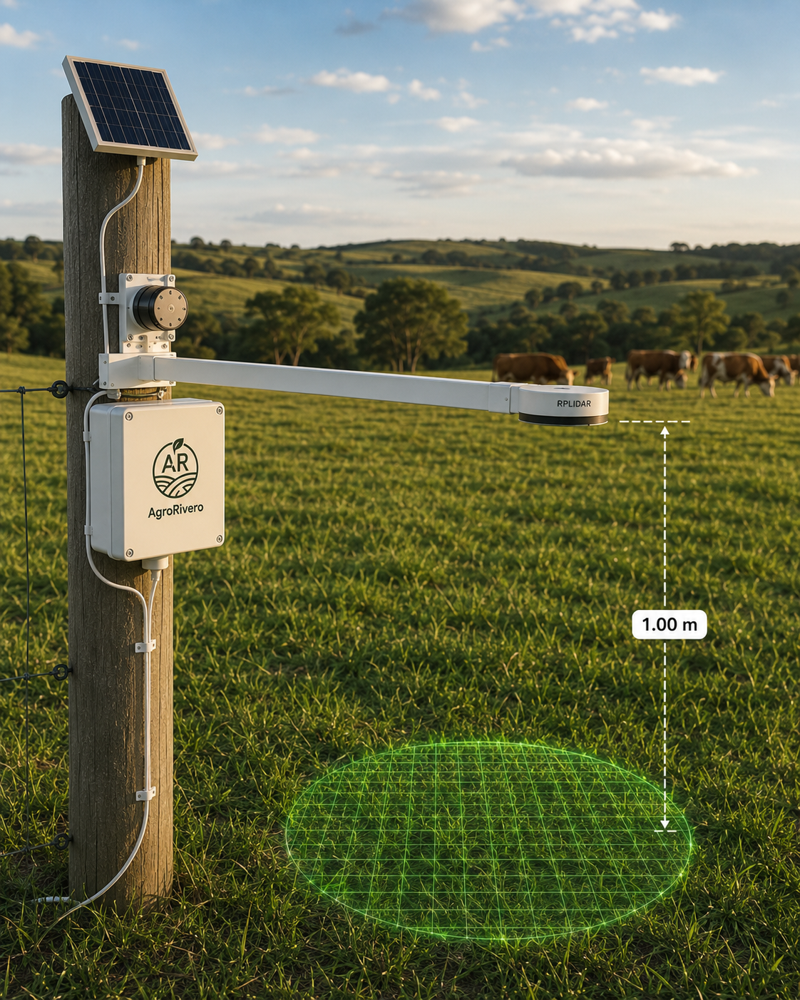

Asesoramiento técnico ganadero, tecnología aplicada al campo y gestión comercial en el corazón de Uruguay.
Estudiante avanzado de Ingeniería Agroambiental en la Universidad Tecnológica (UTEC - Uruguay). Mi enfoque integra la producción agropecuaria tradicional con la sostenibilidad ambiental y la incorporación de tecnologías de precisión.
Desempeño funciones como consignatario en el Escritorio Rural de Freitas, facilitando la compraventa de ganado, la coordinación de embarques a frigoríficos y operaciones del mercado de reposición en ferias de la región.
A través de AgroRivero, busco tender un puente entre la teoría científica y la práctica del productor ganadero de nuestro país.
Zona de operación: Durazno, Florida, Flores y Tacuarembó, Uruguay.
Propuestas técnicas y comerciales adaptadas a las necesidades reales del establecimiento rural de hoy.
Consignatario en Escritorio Rural de Freitas. Gestión integral de operaciones de hacienda vacuna y ovina, cargas a planta frigorífica y negocios particulares en el centro del país.
Diseño y subdivisión técnica de potreros para optimizar la cosecha de forraje, favorecer el descanso del tapiz y maximizar la ganancia individual.
Evaluación y pesaje directo de la biomasa disponible en campo para ajustar la carga animal instantánea de forma empírica y objetiva.
Estimación y valuación objetiva de lotes ganaderos, predios productivos y recursos forrajeros bajo criterios profesionales y del mercado actual.
Análisis de sostenibilidad, manejo y conservación de suelos, control de erosión y adecuación de prácticas frente a exigencias del mercado internacional.
Asistencia técnica e implementación de sensores IoT e innovaciones específicas orientadas a automatizar mediciones y optimizar recursos.
El agronegocio en Uruguay exige el cumplimiento de estándares rigurosos. Nos enfrentamos a un escenario dinámico donde la inserción internacional de nuestras carnes depende cada vez más de la transparencia del proceso productivo y la trazabilidad obligatoria.
La adopción de normativas vinculadas a la no deforestación (EUDR) y la medición de huella de carbono redefinen el valor de nuestra producción nacional en mercados de alto valor.
La toma de decisiones comerciales en ganadería debe estar respaldada por datos precisos y un conocimiento fluido de los mercados locales de reposición y gordo.
A través de la asociación comercial con Escritorio Rural de Freitas, se facilita la articulación de negocios en ferias presenciales, pantallas locales e intermediación directa para frigoríficos, tomando como referencia las planillas semanales de la Asociación de Consignatarios de Ganado (ACG).
Conozca las especies forrajeras claves que sustentan la ganadería nacional y el manejo sugerido para cada una.
Especie rastrera muy persistente y adaptada a condiciones de pastoreo intensivo. Excelente resistencia al pisoteo y al déficit hídrico, aunque detiene su crecimiento con bajas temperaturas.
Gramínea perenne de gran valor nutritivo y alta palatabilidad. Muy frecuente en suelos fértiles y húmedos de Uruguay. Responde bien a la fertilización nitrogenada.
Especie perenne de invierno sumamente apreciada por su calidad forrajera. Posee una gran tolerancia a la sequía gracias a su sistema radicular profundo y es clave para el diferimiento de forraje.
Leguminosa perenne de gran rusticidad. Se destaca por no producir meteorismo (hinchazón) en el ganado vacuno y por su capacidad de fijar nitrógeno atmosférico al suelo.
Leguminosa rastrera de alta calidad y digestibilidad. Requiere buenos niveles de fósforo en el suelo y humedad constante para expresar su potencial productivo.
La gramínea de invierno más sembrada en el país para verdeos. Altamente productiva, de excelente calidad y gran respuesta frente a la fertilización nitrogenada en otoños templados.
Gramínea de base muy persistente en mezclas. Soporta suelos pesados, arcillosos o con anegamiento temporario. Requiere un manejo estricto de la defoliación para no perder calidad.
La reina de las forrajeras por su alto contenido proteico y rendimiento de materia seca. Requiere suelos profundos, bien drenados, con pH neutro y nula tolerancia al anegamiento de raíces.
Práctica que consiste en la incorporación directa de leguminosas (como Lotus o Trébol) sobre la vegetación nativa mediante refertilización fosfatada, sin destruir la estructura nativa del suelo.
Una herramienta diseñada para automatizar el monitoreo del crecimiento del forraje, optimizando los tiempos de rotación y evitando el sobrepastoreo.
Equipamiento fijo montado en brazo mecánico con sensor RPLiDAR A1M8 de barrido activo, el cual escanea y calcula la altura media del tapiz con precisión milimétrica.
Monitoreo local mediante sensores integrados de temperatura, humedad relativa y pluviómetro digital autovaciable.
Defina la altura crítica o el remanente deseado de pastoreo; el sistema emitirá alertas automáticas a su celular cuando las parcelas alcancen el punto óptimo de entrada o salida de los animales.
Panel solar integrado que asegura funcionamiento continuo, y conectividad global mediante modem móvil 4G/LTE con respaldo satelital.
Este sistema nace como iniciativa de desarrollo académico aplicada al campo a través de UTEC y AgroRivero.

Consulte y descargue de forma directa las referencias oficiales de la Asociación de Consignatarios de Ganado (ACG) correspondientes a la última semana.
Ver Planilla de Precios ActualEstimaciones ágiles y orientativas para la planificación del rodeo ganadero basadas en coeficientes técnicos típicos.
* Cálculos orientativos con base en una tasa media de gestación de bovinos de carne. El manejo sanitario puede incidir en las tasas de preñez finales.
* 1 UG equivale a una vaca de 400 kg de peso vivo gestante o criando un ternero. El pastoreo rotativo puede aumentar sensiblemente estos coeficientes de carga recomendados.
Estoy disponible para coordinar tasaciones de ganado, planificar visitas técnicas a establecimientos, evaluar sistemas de pastoreo o canalizar sus operaciones con el respaldo del Escritorio Rural de Freitas.
092 510 561
@agrorivero_uy
Durazno, Florida, Flores y Tacuarembó (Uruguay)